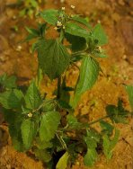
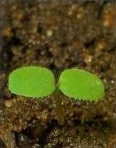
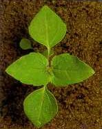

KICSINY (APRÓ, GYAKORI) GOMBVIRÁG
GALINSOGA PARVIFLORA Cav. (GASPA)
ÉLETFORMA : T2
TERMÉS: A fészek 4-6 mm hosszú, csaknem gömbölyű.
Kétféle kaszattermése van. A belső kaszatok kúp alakúak, tompán 4 vagy 5 élűek,
barnásfeketék, ritkás, rövid, merev, felfelé néző, fehéres szőrökkel. Bóbitája
15-20 pillás szélű, fénylő pikkelyből áll, ezek ernyőszerű koszorút alkotnak. A
szélső kaszatok laposabbak, háromélűek, kissé görbültek, bóbitájuk
csökevényes, legfeljebb néhány sertéből á11, 1,4-l,6 mm hosszúak, 0,6-0,7 mm
szélesek. Ezerkaszattömege 0,20 g. Növényenkénti kaszathozama igen változó.
Külföldi adatok szerint 5000-400 000 kaszatot terem, Csírázáshoz meleget és fényt
igényel, ezért tavasszal alig csírázik, de nyáron, amikor a talaj fölmelegszik, nagy
tömegben kel.
CSÍRANÖVÉNY: Sziklevelei kerekdedek, a végüknél enyhén
karéjosak. Az első lomblevelek háromszögletesek, szélük fogazott.
KIFEJLETT NÖVÉNY: Egyéves, orsógyökerű, 10-80 cm magas.
Szára alul 6 bordájú, felül gyengén bordás, felálló vagy heverő, dúsan ágas.
Átellenes levelei tojásdadok, kihegyezettek, fogacskán vagy hullámos élűek, rövid
nyelűek. Az egész növény gyéren szőrös vagy kopasz. Virágzatai hosszú
kocsányokon, többnyire hármasával nőnek a hajtások csúcsán vagy a
levélhónaljakban. Virágai sárga színűek. Kedvező körülmények között igen
gyorsan növekszik, nyáron a keléstől számított 6 hét elteltével érett magokat
hoz. Fagyérzékeny.
ELTERJEDÉSE: Egész Európában elterjedt. A talajjal
szemben különös igénye nincs, a laza, jó vízellátású, semleges kémhatású
talajokat kedveli.
 |
 |